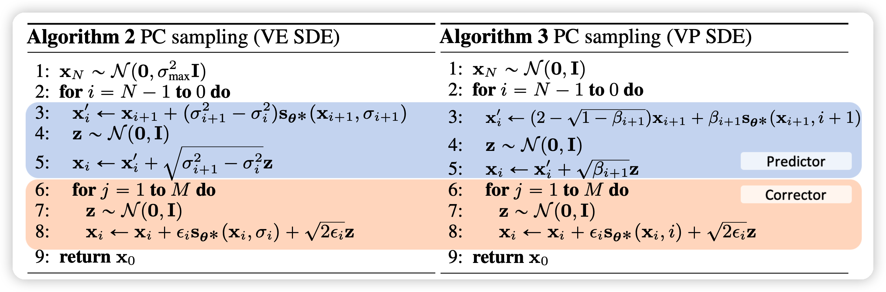
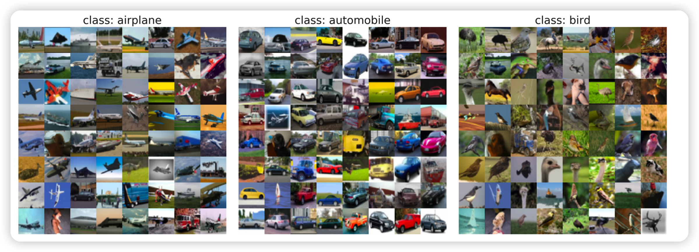

SDE 与 ODE
SDE
sde是随机微分方程，可以理解成一个加噪声的过程：
可以认为是一个原始分布$P_x(0)$随着时间的推移进行变化。同时dw是一个布朗运动的过程，g是scale函数。每一个是时间概率也会加上一个布朗噪声。
对于一个确定的初始分布，这个扩散过程最终会把x的分布变成一个和初始分布无关的量。
下面观察几种已有方法：
观察传统SMLD的扩散公式：
如果考虑连续形式，将 $xi = x(t_i),x{i-1} = x(t{i-1}), t{i-1} \to t_i$时，通过求导和逼近，可以有：
这是一个一届的近似，这是一个非常简单的sde方程。有如下特征：
- 方差趋近于无穷
另一方面，对于DDPM模型的公式：
同样有等价的SDE方程：
这个方程的方差趋向于1.
ODE
所谓的ode，就是想让这个扩散过程和随机变量z无关。
解SDE
对于一个SDE，有一个对应的解：
如果忽略上面方程中dw的项，逆过程就会和随机变量无关，是ode。然而，这样采样效果会变差。
也就是说：
一方面，SDE的逆扩散也是SDE。
另一方面，如果我们有了一个网络去拟合$\bigtriangledown_x \log p_t(x)$，那么我们就可以通过上面的公式把一个随机分布恢复去噪成$P_0$
对于SMLD和DDPM，作者证明了论文中给出的解法都是符合上面的通解公式的。其中DDPM的ancestral sampling是通解公式的一种一阶近似。
作者还给出了一种效果更好的去噪方法：PC

可以看出:
- 原始的 SMLD只有红色部分
- 原始的DDPM只有蓝色部分(这个和原始的ancestral sampling是一阶近似)。
总体而言，这个PC方法相当于是在离散时间下先走按照原来的导数方向走一步概率。由于时间粒度太粗，这个实际SDE解有变差，因此再用多步的Langevin dynamics纠正这个偏差。也就是：预测-纠正
作者通过实验证明了这种带纠正的方法PC同时提升了SMLD和DDPM的效果。注意：计算量增加了
可控生成
也就是在给定y下预测$P_t(x(t)| y)$。y可以是标签，也可以是一个遮罩。由于：
可以发现:
- 左边是不考虑y的正常 score model输出，
- 右边是一个额外的分类器的输出。这个分类器需要对每一个时间t能有输出，因此可以先把训练集中数据做出不同t下的噪声形式，再训练分类器。
生成时，我们将上面的公式作为score带入SDE的通解就可以进行可控地生成了。


总结与点评
总体而言，这篇论文读着很”爽“，让我感觉”不愧是outstanding paper“，”ICLR亦有差距“。这篇文章比较详细地给出了DDPM的数学背景，并且联系起了score-based model和DDPM。 另一方面，作者提出的PC方法简单易用，又真的可以极大提高效果，good。
我在想，既然这些DDPM、SLMD方法都是对于SDE方程的一阶近似解，那么：
- 一阶近似解有无数种，哪种最好？
- 有没有更高阶逼近的解？
另外，我也在思考：
- 想要用在文本生成领域中，还有什么可以借鉴的地方？